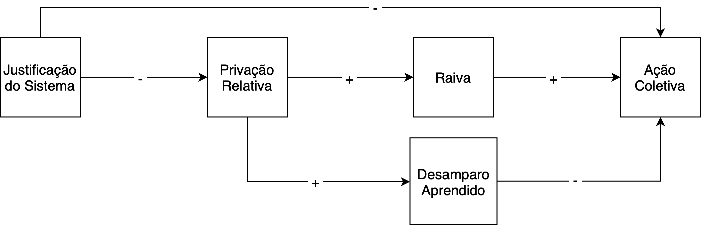

Inação Política: Fatores Ideológicos, Afetivos e Cognitivos
Cleno Couto e Ronaldo Pilati
Universidade de Brasília
Realizado com apoio da Coordenação de Aperfeiçoamento de Pessoal de Nível Superior
Ano de Todos os Protestos
Protestantes tomam as ruas em todo o mundo em 2019.
(Agência France-Presse, 2019)
Deterioração da Democracia
75% da população vivenciou algum declínio em 2021.
(Repucci & Slipowitz, 2021)
Contextualização
Testar um modelo que considere fatores mantenedores da inação política sob condições de injustiça percebida.
(Jost et al., 2017)
Ação Coletiva
Ações de um indivíduo que representem seu grupo e objetivem melhorar suas condições gerais ou garantir seu status.
(Mikołajczak & Becker, 2019; van Zomeren et al., 2008)
Conceituação
(Jost et al., 2017)
Privação Relativa
Sensação de injustiça devido a comparação social.
Raiva
Fortemente associada ao comportamento político, invocando reações.
Conceituação
Justificação do Sistema
Rejeição social, cognitiva e motivacional das alternativas ao sistema por considera-lo como justo, legítimo e justificado.
(Jost et al., 2004, 2017)
Desamparo Aprendido
Expectativa individual de incontrolabilidade.
Pode levar a deficits comportamentais, cognitivos e emocionais.
(Abramson et al., 1978; Maier & Seligman, 1976)
Conceituação

Modelo e Hipóteses
H1
H2
A justificação do sistema irá predizer uma redução nas intenções de ação coletiva, por meio de privação relativa e raiva.
A privação relativa irá predizer uma redução nas intenções de ação coletiva, por meio do desamparo aprendido.
Ainda, foram exploradas as relações destas variáveis em contexto multigrupo.
Modelo e Hipóteses
962 brasileiros, maiores de 18 anos, de panorama político e social diversificado.
Método
Instrumentos
Escala de Intenção em Ação Coletiva, 6 itens, \(\omega\) = .83;
Escala de Motivações para Ação Coletiva, bifatorial, 6 itens, \(\omega\) = .81;
Escala Geral de Justificação do Sistema, 6 itens, \(\omega\) = .90;
Escala de Percepção de Justiça Social, 8 itens, \(\omega\) = .97;
Raiva (Afetos Negativos), 4 itens, \(\omega\) = .87;
Escala de Desamparo Aprendido, 6 itens, \(\omega\) = .78.
Análise dos Dados
Modelagem por Equações Estruturais, por meio do pacote lavaan para R, utilizando Máxima Verossimilhança.
Para o modelo multigrupo foram construídos os seguintes grupos:
Motivações Opostas ao Sistema;
Motivações Favoráveis ao Sistema;
Motivações Opostas e Contrárias ao Sistema;
Sem Motivações Políticas.
Método
\(\beta_{abc}\) = -0.09, 95% CI [-0.11, -0.06], p < 0.001
\(\beta_{de}\) = -0.06, 95% CI [-0.08, -0.03], p < 0.001
Nota. \(\chi^2\) (399) = 1992.46, CFI = .93, TLI = .92, RMSEA = .06, 90% CI [.06, .07]
Resultados
Assimetrias Grupais
Motivações Opostas ao Sistema
Motivações Favoráveis ao Sistema
Resultados
Desamparo Aprendido
Motivações Opostas ao Sistema
Motivações Favoráveis ao Sistema
Motivações Opostas e Favoráveis ao Sistema
Sem Motivações Políticas
Resultados
Discussão
Assimetrias Grupais
Há variações no sentido e na magnitude das relações entre variáveis
Raiva
Alguns autores apontam que pode não ser um preditor confiável por invocar comportamentos imediatos.
Desamparo Aprendido
A inação e a desesperança são mais evidentes dentre quem não possui motivações políticas consistentes.
Generalização
O grupo sem motivações políticas apresenta maior similaridade com o Modelo Geral.
Discussão